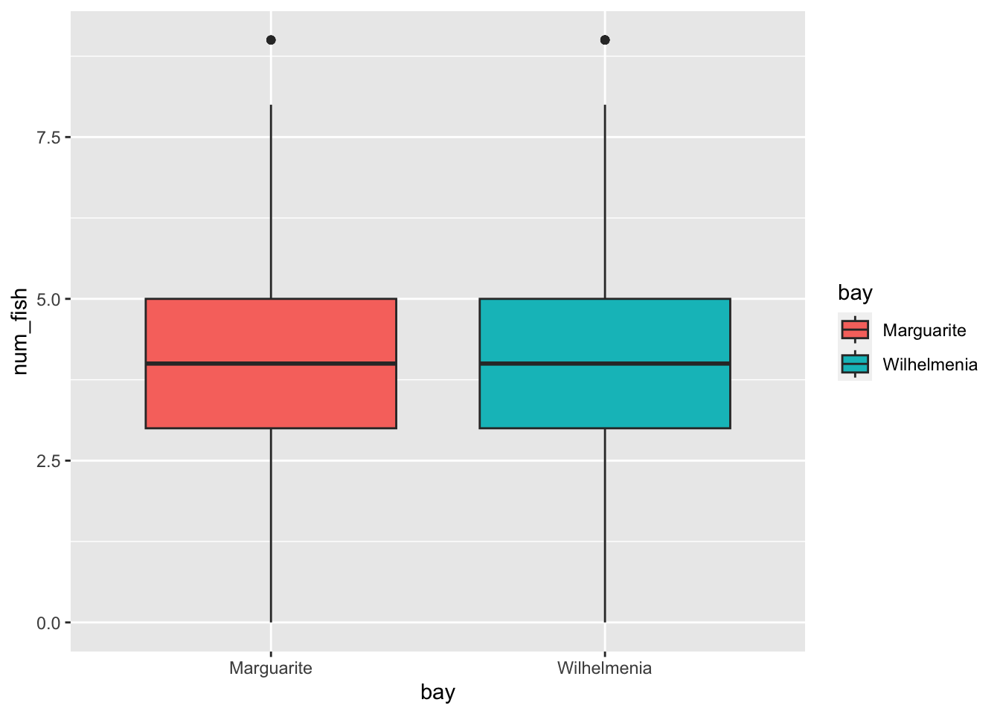
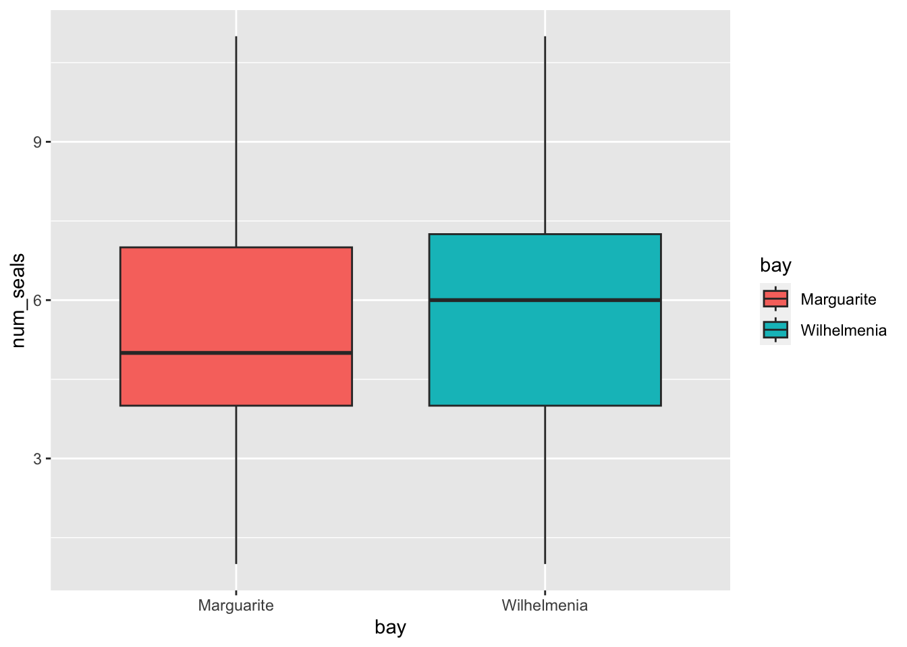

Last week we used t-tests to think about which bay we should go fishing to minimize our impact on leopard seals.
Are the bays equal in their fish populations?
library(tidyverse)
── Attaching core tidyverse packages ──────────────────────── tidyverse 2.0.0 ──
✔ dplyr 1.1.3 ✔ readr 2.1.4
✔ forcats 1.0.0 ✔ stringr 1.5.0
✔ ggplot2 3.4.3 ✔ tibble 3.2.1
✔ lubridate 1.9.3 ✔ tidyr 1.3.0
✔ purrr 1.0.2
── Conflicts ────────────────────────────────────────── tidyverse_conflicts() ──
✖ dplyr::filter() masks stats::filter()
✖ dplyr::lag() masks stats::lag()
ℹ Use the conflicted package (<http://conflicted.r-lib.org/>) to force all conflicts to become errors
fish <-read_csv("arctic-fish.csv")
Rows: 640 Columns: 5
── Column specification ────────────────────────────────────────────────────────
Delimiter: ","
chr (2): time, bay
dbl (2): net, num_fish
date (1): date
ℹ Use `spec()` to retrieve the full column specification for this data.
ℹ Specify the column types or set `show_col_types = FALSE` to quiet this message.
ggplot(fish, aes(bay, num_fish, fill = bay)) +geom_boxplot()

t.test(data = fish, num_fish ~ bay)
Welch Two Sample t-test
data: num_fish by bay
t = -1.7366, df = 630.63, p-value = 0.08295
alternative hypothesis: true difference in means between group Marguarite and group Wilhelmenia is not equal to 0
95 percent confidence interval:
-0.54602183 0.03352183
sample estimates:
mean in group Marguarite mean in group Wilhelmenia
3.90625 4.16250
Response:
Are the bays equal in their leopard seal populations?
seals <-read_csv("arctic-seals.csv")
Rows: 640 Columns: 5
── Column specification ────────────────────────────────────────────────────────
Delimiter: ","
chr (2): time, bay
dbl (2): area, num_seals
date (1): date
ℹ Use `spec()` to retrieve the full column specification for this data.
ℹ Specify the column types or set `show_col_types = FALSE` to quiet this message.
ggplot(seals, aes(bay, num_seals, fill = bay)) +geom_boxplot()

t.test(data = seals, num_seals ~ bay)
Welch Two Sample t-test
data: num_seals by bay
t = -4.2182, df = 638, p-value = 2.82e-05
alternative hypothesis: true difference in means between group Marguarite and group Wilhelmenia is not equal to 0
95 percent confidence interval:
-1.0258729 -0.3741271
sample estimates:
mean in group Marguarite mean in group Wilhelmenia
5.25 5.95
Response:
What should we do?
Cute Seal
ANOVA: ANalysis Of VAriance
When can I use an ANOVA? Why would I?
Independent variable is categorical and the response is numerical
Goal: to compare means among groups
Assumptions of ANOVA
Data are “normally distributed” => look at the histogram
Data are “equally varied” => standard deviations reasonably similar
Samples are independent of one another
The null and alternative hypotheses
\(H_{0}\) (null hypothesis) - The means of the populations we sampled from areall equal:\(\mu{1} = \mu{2} = ... = \mu{i}\)
\(H_{a}\) (alternative hypothesis) - The means of the populations we sampled from are not all equal
Let’s jump in with an example
We have figured out the best option for minimizing our impact on leopard seals while keeping ourselves fed between two bays: Wilhelmina and Marguerite. But there are more bays! And ideally we would use two or more bays to spread out our fishing efforts among mulitple humped rock cod populations.
Our team has collected similar data, as we had for Wilhelmina and Marguerite, on four more bays: Emperor, Hope, Sulzberger, and Iceberg.
We are going to examine the fish populations in class, and you will work with the leapard seals for your homework.
What is it that we want to know about these six bays? Which variable is the independent variable? Which is the dependent?
What are our null and alternative hypotheses?
Load tidyverse and read in the data
It’s always a good idea to visualize your data first. This gives you some perspective on the distribution of the data. What type of data viz is best for viewing the distribution of one variable?
Now let’s calculate some summary statistics. What do you notice?
Let’s create a bar graph to compare the summary stats between the groups. Does it seem like the groups are different?
Finally, let’s code for the ANOVA.
How do we interpret this ANOVA?
What is our recommendation for fishing based only off of this information?
ANOVAs are incredibly useful to tell you if there is a difference in the means of any of the groups. However, they do not tell you which means differ from another. To do that, you need to use a class of tests called Post Hoc Tests. Post hoc tests take into account the problem of running multiple pairwise comparisons, which is the increasing chance of error rates. The most common is Tukey’s HSD, but there are others depending on the specifics of your data set. You don’t need to worry about understanding Tukey’s test, but here I am going to show you how it works and an overview of the interpretation of it.